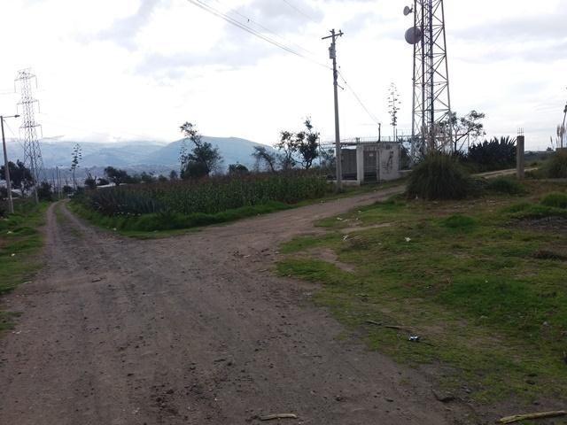
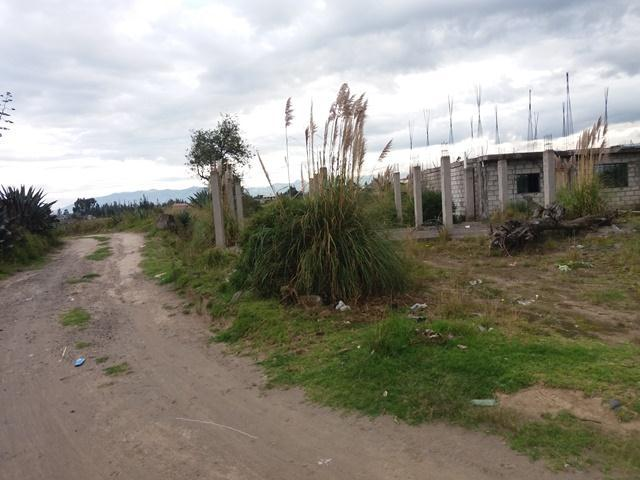
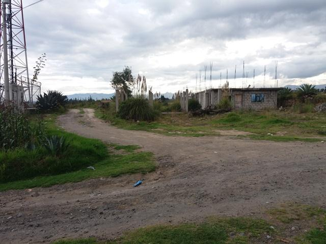
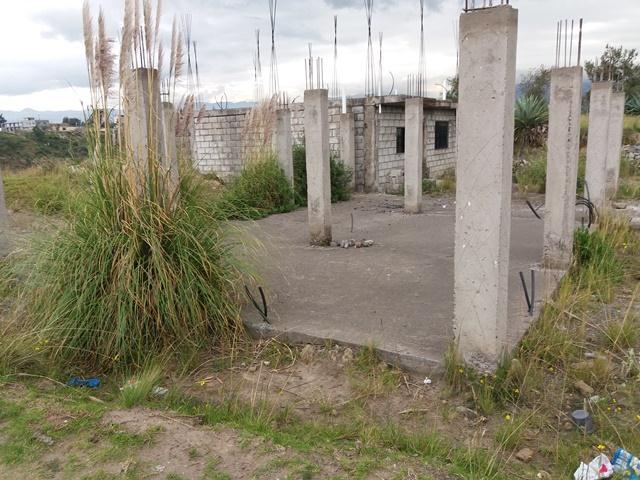
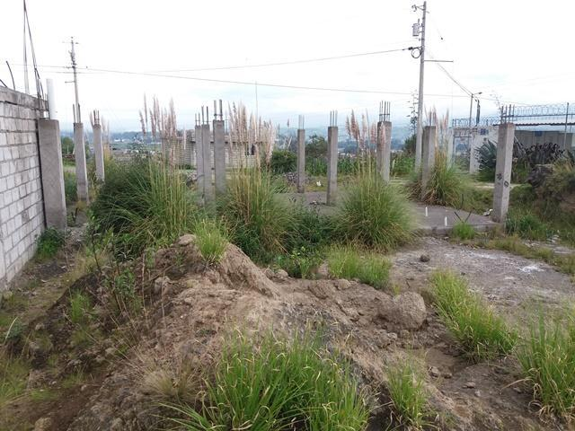
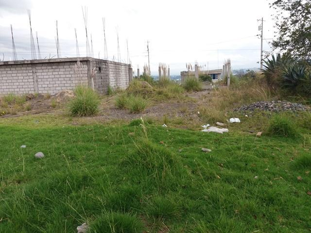
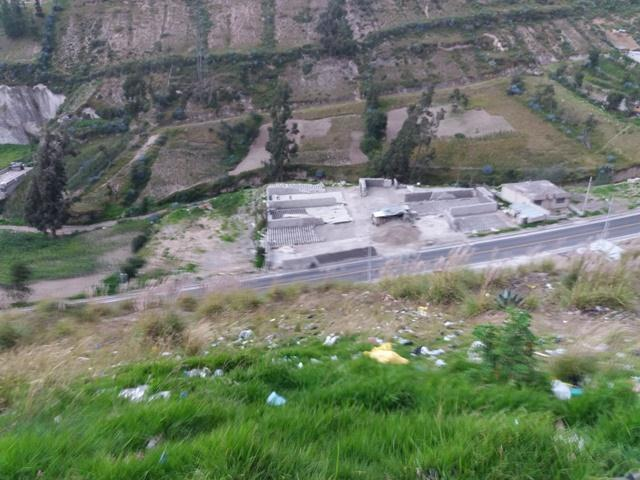
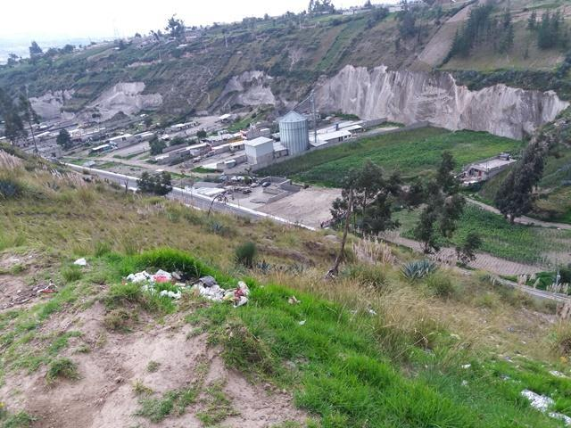
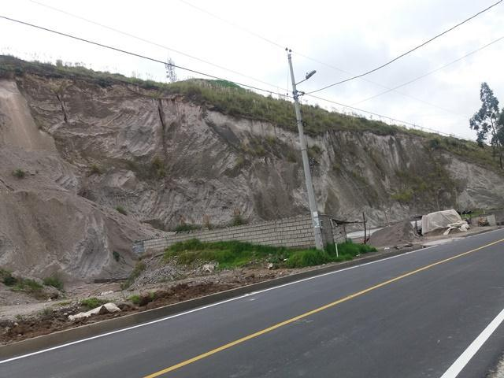
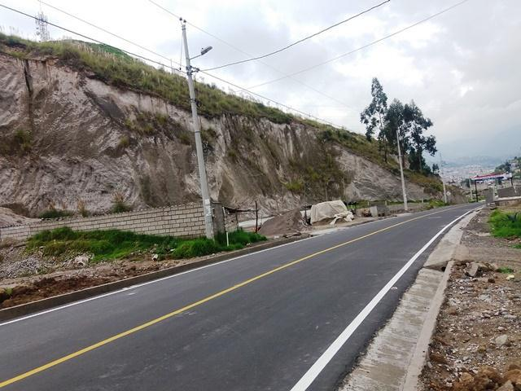

← volver al mapa
Terreno - EC-RJ-156036
EC-RJ-156036 · terreno · LATACUNGA, Cotopaxi










Datos del remate
| Avalúo pericial | $15,519 |
| Tipo de bien | terreno |
| Área de construcción | 0.00 m² |
| Área de terreno | 53.00 m² |
| Cantón / Provincia | LATACUNGA, Cotopaxi |
| Dirección / Sector | CUATRO ESQUINAS. sector: cuatro esquinas; parroquia rural: eloy alfaro; canton: latacunga; provincia: cotopaxi. |
| Señalamiento | Tercer Señalamiento |
| Fecha de remate | 2026-10-28 |
| No. de proceso | 05333202001392 |
Análisis vs. mercado
| Avalúo por m² | $293/m² |
| Mediana de mercado en la zona | $28/m² |
| Descuento vs. mercado | -941.1% |
| Comparables usados | 25 |
| Radio de búsqueda | 2000 m |
| Puntaje | 42/100 |
Descripción completa del avalúo
el entorno corresponde a un sector rural al cual se accede desde la prolongación de la calle paraguay por esta por unos caminos que conducen a la zona denominada chantag bajo, según lo verificado en el mapa cantonal de latacunga, cuyo formato es autocad. es así como se aprecia en la infografía siguiente y que permite un mejor acercamiento al entorno del bien inmueble embargado, cuyos asentamientos están muy aislados, con una baja densidad poblacional tratándose de que están en el límite de la zona urbana y la rural.
de las vistas al entorno al predio analizado se puede anotar que es un predio baldío no hay en su suelo ninguna intervención agrícola o de pequeña industria como es la predominante en su entorno, en su interior se encuentra parte de una posible edificación: una plataforma como contrapiso en hormigón simple sobre empedrado y se hallan plantadas 12 columnas de hormigón armado. sus linderos no están demarcados por lo que la identificación se lo ha realizado con base: al polígono que se visualiza en el geo portal, la captura de puntos georefenciados en el sitio de implantación, y complementados con ortofotos en varias aplicaciones: geo portal gadm latacunga informacion basica_ ortofotos aplicaciones: google earth_ mapa open street mappen street map_ mapa esri. world imagery / esri. world imagery; las que apoyaron la construcción cuyo producto es un polígono irregular, que termina hacia el sur con parte del mismo en una pendiente muy pronunciada y al final una borde de quebrada hacia su colindante que da vista hacia la prolongación de la calle paraguay.
sector: cuatro esquinas; parroquia rural: eloy alfaro; canton: latacunga; provincia: cotopaxi.
Límites: norte: camino publico sin nombre; en 3,59 mts / este: en parte camino publico; en 18,65 mts / y en otra parte cando iza carlos enrique; en 84,02 mts / sur: mise changalombo segundo vicente; 12,03 mts / oeste:toaquiza vega jorge; en 97,10 mts
Clave catastral: 050101167004
Análisis de inversión
⚠ Dudosa — revisar bienEl área registrada (53 m²) parece muy pequeña; es un predio baldío aislado con solo 12 columnas plantadas (obra en etapa muy inicial) y linderos no demarcados — el cálculo del sistema no es confiable con estos datos.
En contra:
- Área probablemente mal registrada
- Obra en etapa inicial
- Linderos no demarcados
Análisis elaborado a partir de la descripción del avalúo — no es asesoría legal ni financiera.
Esta ficha es una copia de lo publicado en el sitio oficial de remates
judiciales de la Función Judicial del Ecuador, para consulta — no
reemplaza el expediente judicial. remates.funcionjudicial.gob.ec no da
un link propio por remate, por eso se generó esta página aparte.
Antes de ofertar, el expediente debe revisarlo un abogado.